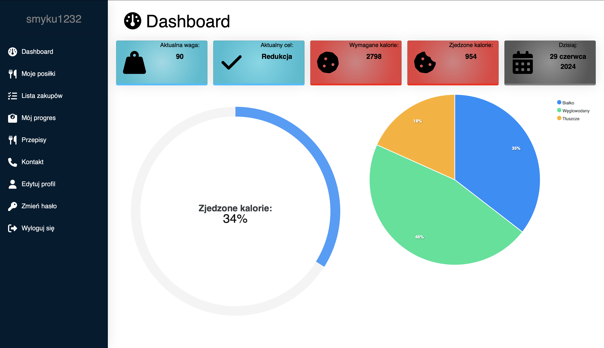

Projects

Aplikacja wspomagająca zdrowy tryb życia
Projekt, który ma na celu wspomóc użytkownika w prowadzeniu dziennika posiłków zjedzonych w ciągu dnia. Dzięki funkcji wyliczania kalorii na podstawie danych podanych przez użytkownika, aplikacja umożliwia dodawanie posiłków oraz produktów, nadzorowanie wagi, a także monitorowanie postępów w osiąganiu celów zdrowotnych.